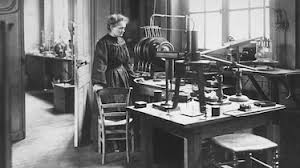

Marie Curie
The mother of modern physics and a pioneer of radioactivity

"A scientist in his laboratory is not a mere technician..."
Milestones of a Extraordinary Life
- 1867 - Born Maria Skłodowska in Warsaw, Poland.
- 1891 - Moves to Paris to study at the Sorbonne, often living on just bread and tea to afford her education.
- 1895 - Marries Pierre Curie, beginning one of the most famous partnerships in scientific history.
- 1898 - Discovers Polonium and Radium; coins the term "radioactivity."
- 1903 - Becomes the first woman to win a Nobel Prize (Physics), shared with Pierre and Henri Becquerel.
- 1906 - After Pierre's tragic death, she takes his place as Professor at the Sorbonne, the first woman to hold the post.
- 1911 - Wins her second Nobel Prize (Chemistry), becoming the first person to win twice.
- 1914 - During WWI, she develops mobile radiography units ("Little Curies") to help battlefield surgeons.
- 1934 - Passes away in France due to aplastic anemia, caused by her lifelong exposure to radiation.
- 1995 - Her remains are moved to the Panthéon in Paris to honor her achievements.
"One never notices what has been done; one can only see what remains to be done."
Explore more about her incredible legacy on her Wikipedia entry.